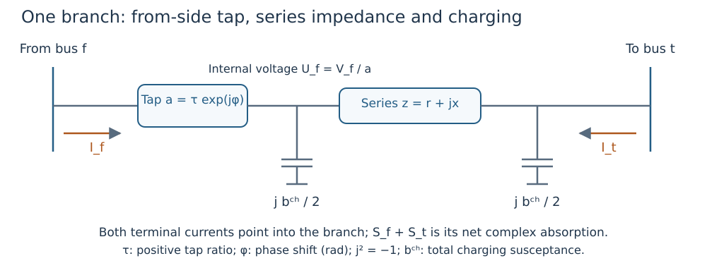

Equipment and joint droop optimization
Selected continuous taps, simple banks and curve parameters can be optimized while unselected equipment stays at supplied settings. Start with branch/shunt physics and the data contract. Bounds must describe the equipment you intend to permit; imported settings do not establish manufacturer capability or legal positions.

Figure 1. Tap design changes the positive from-side ratio. Bank design changes bus admittance, which is separate from branch charging.
Transformer ratios
For a case with transformer ID 11 and a validated state:
controls = [TapControl(11; lower=0.95, upper=1.05, nominal=1.0)]
result = optimize_taps(case, controls; initial_state=state)
audit = validate_tap_design(case, result)
physical_case = with_tap_settings(case, result.taps)The bounds and nominal are dimensionless ratios. initial is a numerical starting value; nominal is a reporting reference, not an objective penalty. Set equal lower/upper bounds to fix a selected setting. Phase shifts remain supplied. Both branch-terminal ratings and AC balance remain active.
Simple bank susceptance
A selected bank must have supported single-step metadata with nonzero step susceptance. For example, step susceptance $B_{step}=0.02$ pu and legal counts 0–3 give a continuous design interval 0–0.06 pu. Here $B_{step}$ is admittance per section, while $B$ is aggregate susceptance. With conductance per section $G_{step}$, aggregate conductance remains $G=G_{step}B/B_{step}$. Positive $B$ is capacitive; negative $B$ is inductive.
# Requires supported simple bank ID 201 in case.network.banks.
result = optimize_shunts(case, [ShuntControl(201)]; initial_state=state)
audit = validate_shunt_design(case, result)
physical_case = with_shunt_settings(case, result.susceptances)A fractional section count is a continuous relaxation. It needs a separate legal state recovery and validation before being described as discrete switching. Fixed shunts without bank metadata cannot be selected through this interface.
Joint settings and curves
result = optimize_joint_design(case;
tap_controls=[TapControl(11; lower=0.95, upper=1.05)],
shunt_controls=[ShuntControl(201)],
droop_controls=[DroopControl(2; slope_bounds=(0.04,0.10))],
initial_state=state)
audit = validate_joint_design(case, result)
physical_case = with_joint_settings(case, result)This fragment assumes those device IDs and control index 2 exist. Slope is in pu voltage/pu reactive power. Missing design bounds fix the corresponding curve parameter. Reactive output inside the deadband and supplied capability remain fixed. Explicit reactive assignments must match the selected design family.
Compare fixed and free configurations under the same objective, operating limits and initial/evaluation policy. Similar objectives with different settings can indicate weak parameter identification; repeated starts do not prove a unique or global optimum.
Outage permission is a separate decision
A base Case design does not itself authorize corrective equipment movement. A Study declares selections, absolute bounds, preventive/corrective timing and movement maps through SCOPFControlPolicy. Read SCOPF equipment timing before using outage recourse. Continuous endpoints do not establish device timing or the feasibility of the path between endpoints.